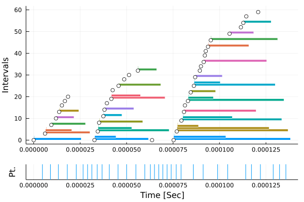
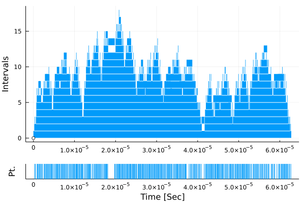

Gallery
Fibonacci
Serial fibonacci
using EventTracker
function fib(n)
n <= 1 && return n
@recordinterval :fib1 a = fib(n - 1)
@recordinterval :fib2 b = fib(n - 2)
return a + b
end
EventTracker.clear()
fib(10)
df = EventTracker.summary_dataframe()| ncalls | time | tag | line | file | _module | firstcall | eventkind | locationid | |
|---|---|---|---|---|---|---|---|---|---|
| Int64 | Float64 | Union…? | Int64? | Union…? | Module? | UInt64 | EventKi… | UInt64 | |
| 1 | 88 | 5.54545e-7 | fib1 | 4 | none | Main.ex-fibonacci-serial | 477410557932 | EVENT_INTERVAL | 140155382448080 |
| 2 | 88 | 3.03409e-7 | fib2 | 5 | none | Main.ex-fibonacci-serial | 477410558732 | EVENT_INTERVAL | 140155382480912 |
using Plots
stks = EventTracker.stacks()
plot(stks)Parallel fibonacci
using EventTracker
function fib(n)
n <= 1 && return n
t = @async begin
rand(Bool) && yield() # introduce more task jugglings
@recordinterval :fib1 local a = fib(n - 1)
a
end
@recordinterval :fib2 b = fib(n - 2)
return (fetch(t)::Int) + b
endfunction withspin(f)
done = Threads.Atomic{Bool}(false)
@sync begin
Threads.@spawn begin
while !done[]
@recordpoint :spin
yield()
end
end
try
f()
finally
done[] = true
end
end
end
function run_fibs_with_spin(nums)
withspin() do
for n in nums
fib(n)
end
end
end
run_fibs_with_spin([5, 6, 7]) # invoke compilationEventTracker.clear()
run_fibs_with_spin([5, 6, 7])
df = EventTracker.summary_dataframe()| ncalls | time | tag | line | file | _module | firstcall | eventkind | locationid | |
|---|---|---|---|---|---|---|---|---|---|
| Int64 | Float64? | Union…? | Int64? | Union…? | Module? | UInt64 | EventKi… | UInt64 | |
| 1 | 39 | 8.2e-6 | fib2 | 9 | none | Main.ex-fibonacci-spin | 513623496632 | EVENT_INTERVAL | 140155408431184 |
| 2 | 33 | missing | spin | 6 | none | Main.ex-fibonacci-spin | 513623501332 | EVENT_POINT | 140155415066080 |
| 3 | 39 | 1.55693e-5 | fib1 | 6 | none | Main.ex-fibonacci-spin | 513623502732 | EVENT_INTERVAL | 140155408431136 |
using Plots
stks = EventTracker.stacks()
plot(stks)
Tarai
Ref: Tak (function) - Wikipedia
using EventTracker
function tarai(x, y, z)
@recordinterval result = if y < x
tarai(
tarai(x - 1, y, z),
tarai(y - 1, z, x),
tarai(z - 1, x, y),
)
else
@recordpoint
y
end
return result
end
EventTracker.clear()
tarai(3, 1, 7)
df = EventTracker.summary_dataframe()| ncalls | time | tag | line | file | _module | firstcall | eventkind | locationid | |
|---|---|---|---|---|---|---|---|---|---|
| Int64 | Float64? | Union…? | Int64? | Union…? | Module? | UInt64 | EventKi… | UInt64 | |
| 1 | 461 | 1.24426e-6 | 3 | none | Main.ex-tarai-serial | 516738944933 | EVENT_INTERVAL | 140154578933776 | |
| 2 | 346 | missing | 10 | none | Main.ex-tarai-serial | 516738945233 | EVENT_POINT | 140154578933968 |
using Plots
stks = EventTracker.stacks()
plot(stks)